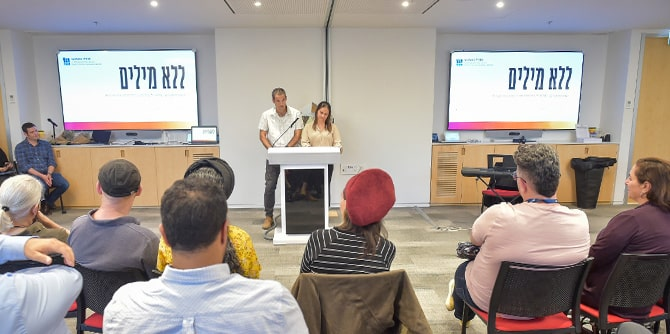
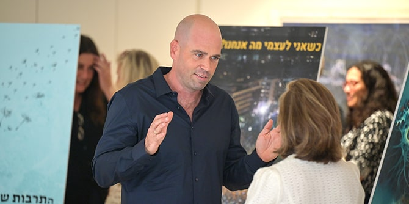

 נציגי מחזור ל' מברכים את הנוכחים ומסבירים על תהליך העבודה (צילום: נוה בן-שמואל)
פוסטר אישי המביע בשפה חזותית את הנושא האישי של כל עמיתה ועמית הוא אחד התוצרים שעליהם עמלים עמיתי בית הספר בראשית שנת הלימודים השנייה שלהם. עיצובם של הפוסטרים הוא תהליך של תמצות, זיקוק וגיבוש של רעיונות רבי-מלל למשפטים ספורים ולדימויים ויזואליים. זהו השלב הראשון במהלך השנתי של התכנסות לקראת החזרה העתידית אל העבודה בשטח בתום שנת הלימודים.
האירוע החגיגי, שהתקיים בבית קרן מנדל ישראל ב-24 באוקטובר ובו הציגו עמיתי מחזור ל' את הנושא האישי שלהם באמצעות פוסטר, אפשר לעמיתים לחשוף את תחומי העניין ואת תוכניות הפעולה שלהם לפני חברי קהילת מנדל – סגל בית הספר, המנחים האישיים ובני משפחותיהם – ולגייסם לעזרתם. לאחר כל הצגה נתבקשו חברי הסגל והמנחים האישיים להגיב על-ידי שימוש באפליקציית "פדלט", שבה נוצרו עמודים ייחודיים לכל אחד מן העמיתים והעמיתות שהתמלאו בשאלות ומשובים, במחשבות המשך, ברעיונות לחיבורים מועילים עם שדות מחקר ומעשה ועוד.

הצגת הפוסטרים של מחזור כ"ט (צילום: נוה בן-שמואל)
טליה זורוף ורועי ליפשיץ, נציגי מחזור ל', בירכו את הנוכחים והסבירו על תהליך העבודה על הפוסטרים בעזרת מילותיה של רחל חלפי: " זֶהוּ נִסָּיוֹן לְהָקִים חֶדֶר בְּתוֹך הַיָּם, זֶהוּ נִסָּיוֹן לְרַבֵּעַ אֶת הַמַּעְגָּל". הם הדגישו את חשיבותה של הקבוצה בדרך המשותפת שלהם בבית הספר מנדל: "מאז שהתחלנו לצעוד כאן יחד, ברור לנו גם שאנחנו לא רק יחידים. בכל יום אנחנו חושפים עוד טפח של העוצמה הקסומה מאוד שטמונה בנו כקבוצה".
ד"ר נטע שר הדר, שהובילה את תהליך העבודה של העמיתים, בירכה את העמיתים על הגעתם לרגע ההצגה ועל העניין שעוררו עבודותיהם – עניין שהתבטא בקהל הרב שנכח באירוע. היא הודתה גם לגילי שטרן, שסייע בעבודה על התוצרים. בהמשך דבריה הציגה את התמה המארגנת של פרויקט הפוסטרים בשנה זו: "ללא מילים". באמצעות דימויים ויזואליים שהתפרסמו בעיתונות היומית הראתה נטע כיצד תמונה שווה אלף מילים ומעבירה מסרים רבי-משמעות באמצעות המידע החזותי שהיא מכילה. על-ידי שימוש בדוגמאות מאירועים פוליטיים עכשוויים בארץ ובאנגליה, העלתה שאלות לגבי האופן שבו עלינו לנהוג בדימויים, מתוך מודעות לעולם הערכים שהם מייצגים ונקשרים אליו.
הצגות הפוסטרים הדגימו את המגוון הרעיוני והמעשי הקיים בקרב עמיתי מחזור ל' ואת הקשת הרחבה של הנושאים שהם ימשיכו ויעמיקו ללמוד וליישם – במהלך שנת הלימודים הנוכחית ואחריה.
לצפייה בפוסטרים של עמיתי מחזור ל' לחצו כאן >>
{kind=link}
{kind=link}
{kind=link}